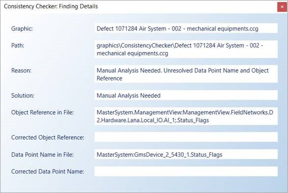

Consistency Checker Diagnostic Tool Tasks
The Consistency Checker is an engineering, diagnostic tool that is used to check the software for errors that may exist between the graphics stored in the project folder and System Browser, and then attempt to fix them. The tool uses specific task files (.DLL) that you load and unload, to determine the tasks (or checks) that the Consistency Checker performs on your system.
The Consistency Checker also allows you to convert all graphics files in a project or library to any of the supported graphic file formats. A HQ librarian can use this tool to convert all symbols to the current management station graphic file formats.
The task files must be located in the GMSMainProject > BIN folder in order for the Consistency Checker tool to load them.
Task File
The management station provides a default .DLL file that is loaded into the Consistency Checker.
TIP: By default, all the paths in a task are checked. To reduce task runtime, in the Properties of Task dialog box, delete the paths not required or modify the paths to point to the objects/folders you want to convert.

NOTE:
You should always run a backup of your graphic libraries before running any of the task files. Additionally, you should only run one task at a time.
The default file contains the following checks and tasks:
Change System Name
This task allows you to update graphics, symbols, and graphic templates that may be associated with a management platform the name of which has been changed.
Check *.CCG and *.CCT files against System Browser nodes
This task checks to see that a node exists in the System Browser for every graphic (.CCG and .CCT) that is located in the Graphics project folder. If there is no existing node in the System Browser, the missing node is added.
If the parent folder does not exist in System Browser, you must run the following task instead: Bulk import graphics (.ccg)
For the procedure on importing graphic files using the Consistency Checker, see Importing Graphics Files.
Check for Data Point Name (ID) and Object Reference in *.CCG files
This task checks the Data Point Name and Object Reference pair saved in a graphics .CCG file for any discrepancies.
To fix a discrepancy between the graphic in Desigo CC and the corresponding .CCG project file, the .CCG file must be re-saved.
When you run the task, the Consistency Checker, by default, scans through all the .CCG files stored in the projects folder: [Installation Drive]:\[Installation Folder]\[Project Name]\graphics and compares the Data Point Name and the Object Reference values in the file against the values saved in the database. If any inconsistencies found are then displayed in the Findings section of the tool.
If you want to specify a different path or a sub-folder for the Consistency Checker to scan, you can enter that information in the Key/ValuePath field.
Key | Accepted Value |
Path | Graphics\*.ccg Graphics\[FolderName]\*.ccg Graphics\[FolderName]\[Filename].ccg [Installation Drive]:\[Company Name]\[Brand Name]\[ProjectName]\graphics\*.ccg |
NOTE:
- Graphics with missing key-value-pair in the object reference are excluded from check.
- Graphics without a corresponding System Browser node are checked and tagged with “< Orphaned File >”
Flagged Inconsistencies
The following types of inconsistencies are flagged and displayed under the Reason column:
- Mismatch between the data point name and data point designation pair.
- Unresolved data point name - The data point name does not exist in the data base.
- Unresolved data point designation - The data point object reference does not exist in the data base.
- Unresolved data point name and data point designation - Neither the data point name nor the object reference exist in the database.
Finding Details

Double-click a single finding to launch the Consistency Checker: Finding Details pane. This pane provides information about the finding, such as the graphic, path, and reason for the finding, as well as the recommended solution. The values are read-only; but are selectable and can be copied.
Additionally:
- Only one pane is displayed at a time. If you double click on another finding, the current pane is replaced with the pane for the latest selection.
- The Solution field applies to the entire graphic and not the individual finding.
- The Corrected Object Reference and Data Point Name fields are populated once the Fix is applied.
Fixing the Findings
To fix the findings, the graphic will be resaved.
- Data points that have an unresolved name and object reference pair cannot be fixed by the Consistency Checker without manual intervention. This can occur when a data point has been deleted, and is indicated by a red cross mark in the Solved column next to that finding. To fix this situation, the deleted object must first be rediscovered by Desigo CC and then the graphic must be re-saved.
- Selecting a fix on an individual finding automatically fixes all the other findings found within the same file.
- Orphaned files are saved and a System Browser node is created in the project.
Once you have applied a fix to the findings and re-saved the graphics, any discrepancies with a red check mark next to them indicate that the data point designation cannot be resolved.
Check System Browser nodes against *.CCG and *.CCT files
This task checks all graphic nodes in the System Browser against the graphic files (.CCG and .CCT) in your Graphics project folders. If you have an orphan node—a node that does not have an equivalent graphic—the orphan node is deleted from System Browser.
NOTE: For CCT files, results for all libraries are displayed, however, you will only be able to fix results as determined by your current customization level. For example, if you run the task from a project level, results are shown for all library levels. Any fixes will only apply to the project libraries. Any other library fixes will display with an error.
Check the Related Items of each System Browser node
This task checks that all System Browser nodes have valid links to any graphics that have been associated with the node. If a graphic no longer exists because the link is invalid, the invalid link is removed from the node’s Related Items display.
For a procedure that uses this task, in the Importing Graphics Files section, see how to import graphic files using the Consistency Checker tool.
Check thumbnails (*.PNG files) for Symbols and Graphic Templates
This task checks whether all graphic files have a thumbnail (.PNG) and whether it is current. The task can be used to update all missing or old thumbnails.
FileConversion
This task is used when you upgrade graphic specific project data. The Consistency Checker checks all the graphics, symbols, templates, and sample graphics in the specified folder and library and updates them as needed. This is part one of a two-step process to update symbols and then update the subsequent graphics with the symbols from the custom libraries.
The following are the properties of this task that you can optionally use to control which files are being converted during the task execution:
Key | Value | Function |
Conversion Method | To Bin (Default) | Type one of the desired file format for the conversion:
|
Path Graphics -Symbols -GraphicTemplates -SampleGraphics | Graphics\*ccg Libraries\*.ccs Libraries\*.cct Libraries\*.ccg | For each path, type path of the location of the files. TIP: By default, all the paths are checked. To reduce the task runtime, delete the paths not required or modify the paths to point to the objects you want to convert. |
Force Conversion | False (Default) \ True | Checks if the actual file format matches the one you want to convert to, for example, Binary. False - If match found, then not saved. True - Match or no match, all files are re-saved. |
Bulk import graphic (.ccg)
This task allows you to import one or more .ccg graphics and folders from your project folder structure: [Installation Drive]: > [Installation Folder] > [Project Name] > Graphics.
You can use this task when you have created a set of graphics and want to move them to a customer project or another project.
When the task is run, the System Browser structure is compared against the project folder structure and any missing graphics or folders are imported.
Conversely, if the project folder structure changes, i.e., graphics or folders are deleted, the System Browser folder structure is updated to reflect the new structure and its content accordingly.
NOTE: When using the bulk import graphics task to change the folder structure (e.g. rename a graphics folder) this can have an impact on existing links to affected graphics and on related items.
- Links: The object reference can become invalid and need to be manually corrected
- Related Items: The order of the related items can change compared to the previous order (e.g. if the order was manually changed) and the manual generated related items (source = ‘user’) are not being updated and are deleted.
For the procedure on importing graphic files using the Consistency Checker, see Importing Graphics Files.
Symbol Statistics
This task allows you to generate a list of symbols in the Findings section and then run a report that displays statistical information about all or selected symbols. Statistics include: number of elements, latest version, usage information, etc. The report is saved as a .CSV file in the Local\Temp directory.
NOTE: To generate a report on all the symbols displayed in the Findings section could take up to an hour. It is recommended you only select the symbols from the list whose statistics you want to see in a .CSV file, or you can specify a subset of symbols using a specific path in the Task Properties section.
- Click Check to generate the list of symbols, and then
- Click Fix to generate the report.
Update Symbol Dependencies
This task checks to see that any graphic or symbol containing embedded symbols has the most current version of the embedded symbols. If any of the embedded files are out of sync, the Fix button resaves the dependencies among them, thereby maintaining the integrity of the database and allowing for the rendering of the files to be optimized. The following are the properties of this task. It is recommended that you leave them at their default value.
Key | Value | Function |
Path Graphics -Symbols -GraphicTemplates -SampleGraphics | Graphics\*ccg Libraries\*.ccs Libraries\*.cct Libraries\*.ccg | For each path, type path of the location of the files. TIP: By default, all the paths are checked. To reduce the task runtime, delete the paths not required or modify the paths to point to the objects you want to convert. |
Related Topics
For related workflows and procedures, see:
For workspace overview, see Consistency Checker Diagnostics Tool